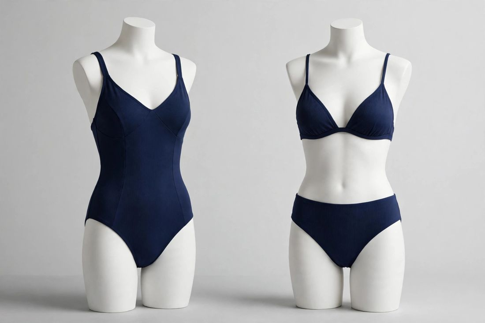

A swimsuit is the only garment your customer judges while it is wet, stretched, and standing in sunlight, all at the same time. A dress that fits on a hanger can hide a lot. Swimwear hides nothing. We are a custom swimwear manufacturer in Sialkot, Pakistan, making swimwear for small swim labels and boutiques, and the orders that go wrong almost always go wrong in the same few places. This guide walks through those places, so your first order arrives the way your customer expects it to.

The order that went wrong first
A swim label came to us after her first order somewhere else. The sets had looked right in every photo the factory sent, and the samples she had approved felt right in her hands. Then her customers wore them. The red bled into the white trim in the first pool swim, the elastic in the leg openings went slack after two washes, and the bottoms rode up in a way no photo had shown. She had sold most of the run before the first complaint arrived. She came to ask what she should have checked, and in what order, before the money went out. This guide is that list, written the way we explained it to her.
Will it survive the water? Ask that before anything else
In our experience, the fabric choice comes down to two families, and choosing on feel alone is where it usually goes wrong. Polyamide, usually sold as nylon, feels soft and stretches beautifully, but it fades in chlorine faster than most buyers expect, and a dark navy can turn patchy after a season of pool swimming. Polyester blends feel slightly firmer at first, but they hold their colour and shape in chlorine far longer. For pool swimwear, we usually recommend the polyester blend; for a soft resort piece that will mostly see the beach, the polyamide can be the right call. The point is that the water your customer swims in should decide the fabric, not the swatch in your hand.
Whatever you choose, test it wet, not dry. Do it yourself when the sample arrives: soak it, wring it out gently, hold it up to the light. If you can see through it, it needs a fuller lining. Stretch it hard, let it go: it should come back to exactly the size it started.
Bikini, one-piece, or the set: which one do you order first?
Most labels want all three at once: a bikini, a one-piece, and a matching cover-up, in two colourways. It is six ways for a first order to go wrong instead of one. Start with the cut your customer already buys from you.
A bikini set is two products, not one: the top and the bottom are graded, fitted and checked separately. It suits a label whose customer already buys separates. But it is the most work per order, and the most room for a fit problem to hide.
A one-piece is one size run and one fit to get right, which makes it the simplest first product for a new label. The trade-off is that it is less forgiving: one wrong measurement in the torso length and the whole suit fails, and a customer between sizes will feel it.
The matching set, a bikini with a sarong or cover-up in the same print, sells the holiday, not just the suit. It is also where colour matching matters most: the sarong has to be cut from the same dye lot as the suit, or the set arrives as three different colours. Order the cover-up fabric with the suit fabric, from the same lot, and check them side by side under daylight before cutting.
Our swimwear range covers one-piece suits, bikini sets and matching cover-ups. Our advice for a first order is simple: one cut, one colourway, proved in the water. Add the second cut once the first one has sold.
Why swimwear sizing fails more often than any other product
Stretch hides bad grading. A swimsuit can fit three sizes of body and still be the wrong size, because it will go on easily and only fail when the customer moves or gets out of the water. That is why the size chart matters more here than anywhere else.
Agree the chart in writing before sampling, in real measurements, not retail sizes: a size 10 from one label is not a size 10 from another. Grade bust, waist, hip and torso length separately: a suit graded only on bust and hip will pull at the shoulders on a taller customer.
Tops need their own decision. Built-in cups give support and shape, but they have to sit in the right place for each size. Removable pads are easier to make, but they move after the first wash, and your customer will notice. If you choose pads, ask for a pocket that holds them properly.
For a first order, ask for one fit sample in your most common size and try it on real people, in the water if you can. Check the leg openings, the bust, and whether the suit stays put when the wearer bends and reaches. Keep the approved chart with the order: it is what keeps the second order fitting like the first.
Colour is decided too late
Most buyers choose the print first and ask about fastness last, and that order is backwards. A bright print that bleeds in the first wash is a failed order, whatever it looked like in the photo.
Dark colours are the risk: a deep red or navy next to white trim will bleed if the dye is not fixed properly. Ask how the fabric is tested: a rub with a damp white cloth tells you most of what you need to know.
Sublimation printing holds bright, all-over prints on polyester and does not crack when the fabric stretches. Piece-dye gives solid colours with a softer hand. Ask which one your fabric takes. White goes see-through when wet unless it is fully lined, and neons fade fastest in the sun, so ask about both before you commit.
How I check a sample, and why I check it wet
I still do the same check on every swimwear sample, and I do it wet. I soak the suit, wring it out gently, and hold it up to the light: if I can see through the lining, it goes back. Then I pull the leg elastic the way a customer pulls a suit on, hard, and let it go. It has to come back to exactly where it started. I check the stitching at the bust, where the fabric is pulled hardest. And I look at the print where the fabric curves, around the hip and the bust: a print that stretches white at the curve was printed on the wrong base. Three minutes, wet hands, and it has caught more bad suits than any list. The habit started with a run of white one-pieces years ago that looked perfect dry. They were not.
The parts nobody photographs: lining, elastic, hardware
Buyers photograph the print and forget the parts that touch the skin. Specify them in your tech file:
- Lining — front lining as a minimum, full lining for light colours and white. It has to stretch the same way as the shell, or it will pull.
- Elastic — swim-grade elastic, not garment elastic. It has to recover after chlorine and salt. Stretch it hard, let go, and check it comes all the way back.
- Hardware — rings, sliders and clasps. Metal in salt water has to be rust-proof, stainless or coated, or it will stain the fabric. Plastic never rusts, but it can snap on a wide strap.
- Stitching — seams that lie flat against the skin. A raised seam chafes in salt water.
The numbers, all in one place
Swimwear trial orders start at 30–50 pieces per style, sizes mixed inside the run, so a new label can launch one cut in one colourway without buying stock nobody will swim in.
Sampling is the first step: send your design or tech file, with measurements, fabric and colours. No tech file? A clear photo, your artwork file and a reference piece you already own are enough to begin. Once we have seen the design, we quote that exact piece, not a guess made without it, then develop the sample in 7–10 working days and share photos for approval. When it arrives, wear it, swim in it if you can, wash it once, and check the elastic, the lining and the colour match. A change at the sample stage costs a day. The same change after cutting costs the run.
Your brand goes on the product itself: we make to your design and sew in your own labels and size tags, with your packaging as instructed. A "Made in [your country]" tag goes on if you ask for it, otherwise our standard "Made in Pakistan" tag. Send label artwork with the design, so it is ready with the sample.
Work back from the day your customers need the suits in hand. Sampling takes 7–10 working days; bulk time depends on quantity and finishes. Then add shipping to North America or Europe, by air or by sea, and tell us the date you actually need. A real deadline lets the run be planned around it.
We check while the run is going, and again when it is finished and packed: measurements, stitching, colour, labelling and count. With a small order, we can send one finished piece for you to check while the rest keeps going. Ask for photos of the finished pieces before they are packed. For larger orders, an independent pre-shipment inspection adds a documented check before the goods leave, see our inspection services.
Send this with your tech file
Before the order starts, send your manufacturer this, with the design:
- The cut, and the sizes your customers actually buy
- The fabric, or a swatch of the feel you want
- The colours, and whether the pieces of a set have to match exactly
- The lining you expect, especially for light colours and white
- The label and tag artwork, and the packaging you want
- The date you need the goods in hand
A custom swimwear manufacturer that has all of that can quote you exactly. One that quotes without it is guessing.
One set first, then the range
You do not need five cuts and three colourways to start. One set, in your customer's colour, in the sizes they actually buy. Send the design, a tech file or a clear photo on WhatsApp at +92-339-5099397 or by email at safettech@outlook.com, and we will come back with an exact quote and a sampling plan. Your brand's first swimwear can start with as few as 30 pieces per style.

Swimwear is the product I test wet before I approve anything. Send me your design and tell me where your customer will swim in it, and I will check the fabric the way the water will.
Ahmed Zahid
Founder & Director, Safe-T TECH International · Sialkot, Pakistan